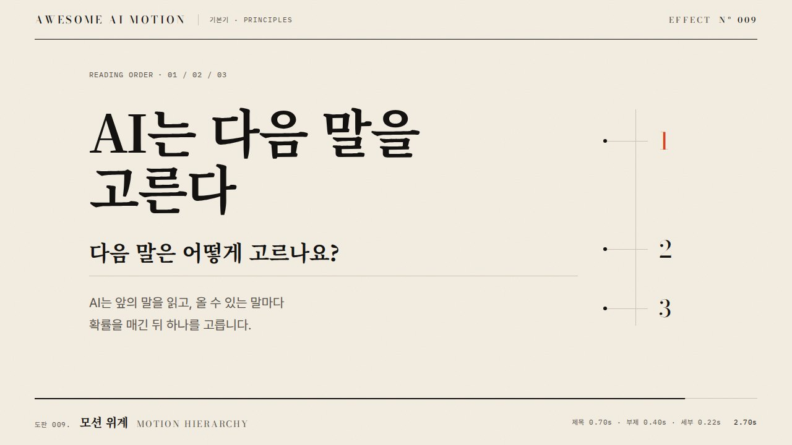

썸네일 활용 루트
대상: 유튜브 영상 썸네일, 강의 목록 카드, 강의·시리즈 커버 정지 이미지
조사·확인일: 2026.09.30
핵심 목표: 실제 내용을 정확하게 예고하면서 작은 화면에서 주제와 볼 이유를 빠르게 읽히게 해. 모션 사전의 스테이징·리프레임·시선 경로를 공간 설계로 옮기고, 클릭 뒤 만족까지 실험으로 확인해.
근거 표기: 공식은 플랫폼 요구·공식 권고, 연구는 원논문의 지각 결과, 설계 제안은 이 루트의 제작 시작값이야. 연구의 주의·탐색 효과를 유튜브 CTR 상승률로 바꾸지 마. 조합·면적·글자 수·픽셀 범위는 별도 표시가 없으면 설계 제안이야.
1. 목표와 제약
1.1 성공 지표
| 매체·노출 상황 | 우선 목표 | 성공 판단 | 근거·제약 |
|---|---|---|---|
| 유튜브 홈·추천 | 낯선 시청자에게 주제와 볼 이유 전달 | 유입 경로별 CTR 진단, 공식 A/B 실험의 시청 시간 기반 결과 | 공식 테스트는 클릭률보다 시청 시간을 최적화해. [S2][S3] |
| 유튜브 검색 | 검색 의도에 맞는 결과·학습 약속 식별 | 검색 유입 CTR과 클릭 뒤 평균 시청 지속 시간 확인 | 제목에 검색어·범위, 이미지에 실제 결과·차이를 배정하는 조합 제안. [S3][S4] |
| 강의 목록 카드 | 주제·난이도·학습 결과 구별 | 카드 노출 대비 상세 진입, 등록·학습 시작을 후속 지표로 확인 | 지표와 분모는 LMS별로 정의해. 유튜브 CTR과 섞지 마 |
| 강의 시작 화면·교재 커버 | 내용 식별·시리즈 일관성·신뢰 | 제목 판독, 회차 구분, 플랫폼 크롭 통과 | 클릭이 없는 표지에는 CTR을 성공 지표로 붙이지 마 |
CTR 정의: 등록된 썸네일 노출에서 발생한 조회 비율. 전체 조회 수 ÷ 전체 노출 수로 다시 계산하면 다른 값이 될 수 있어. 외부 링크 등에서 발생한 조회는 등록 노출 범위와 다르기 때문이야. 유튜브의 2~10%는 절반의 채널·영상이 들어가는 관찰 범위이며 목표·합격선이 아니야. [S3]
1.2 매체·길이·환경
| 항목 | 적용 규칙 | 근거 상태 |
|---|---|---|
| 재생 길이 | 정지 이미지 1장. 동작 지속 시간·이징·루프는 적용 없음 | 이 루트의 범위 |
| 판독 점검 | 1초에는 주제, 3초에는 볼 이유를 말할 수 있는지 점검 | 제작 테스트 시간 제안. 보편적인 인간 판독 시간이라는 뜻 아님 |
| 유튜브 일반 영상 | 현행 권장 3840×2160, 16:9, 최소 폭 640px, JPG·PNG | 공식 [S1]. 1280×720을 현행 최상위 권장 해상도로 적지 마 |
| 유튜브 파일 크기 | 모바일 영상 썸네일 2MB 미만, 데스크톱 영상·Shorts·팟캐스트 50MB 미만. 모바일 팟캐스트 10MB 미만 | 공식 [S1]. 업로드 장치를 기준으로 내보내 |
| 유튜브 변형 | Shorts 권장 2160×3840·9:16, 팟캐스트 재생목록 1:1. 세로 영상의 16:9 이미지는 일부 목록에서 자동 4:5 이미지로 대체됨 | 공식 [S1]. 일반 영상 규격을 모든 커버에 강제하지 마 |
| A/B 해상도 | 후보는 같은 고해상도로 제작. 하나라도 1280×720 미만이면 실험 후보 전체가 854×480으로 축소될 수 있음 | 공식 [S2]. 마스터 권장값과 실험 축소 기준을 구분해 |
| Udemy 강의 이미지 | 최소 750×422, 최대 6000×6000. 모바일 크롭을 통과하는 안전 영역에 주제 배치 | 공식 [S5]. 정확한 안전 영역은 공식 도식·실제 화면으로 확인해 |
| Udemy 텍스트·프레임 | 강의명 같은 이미지 내 텍스트 금지, 로고 등 제한된 예외만 허용. 프레임·테두리·레터박스 금지 | 공식 [S5]. 유튜브 제목형 템플릿을 그대로 쓰지 마 |
| 기타 LMS·강의 표지 | 플랫폼 비율·최소 크기·텍스트 허용·자동 크롭 먼저 확인. 미지정이면 16:9 설계안을 가정하고 기록 | 제작 제안. 플랫폼 공통 표준이라는 뜻 아님 |
| 노출 환경 | 휴대폰 작은 카드, 밝고 어두운 UI, 주변 추천 이미지, 재생 시간·진행 상태 배지와 함께 점검 | 유튜브는 장치에 따라 다르게 보인다고 안내해. [S4] |
1.3 접근성·신뢰
| 제약 | 설계 규칙 | 근거 |
|---|---|---|
| 낮은 대비·저시력 | 필수 문구와 실제 배경 대비 4.5:1 이상을 기본값으로 잡아. 큰 글자 예외 3:1은 실제 표시 크기로 판단해 | WCAG 1.4.3은 이미지 글자에도 적용돼. 원본에서 큰 글자가 작은 카드에서도 큰 글자인 건 아니야. [S6] |
| 색각 차이 | 전후·성공·실패를 색에만 맡기지 마. 라벨·형태·정렬을 함께 써 | WCAG 1.4.1 [S7] |
| 스크린리더 | 직접 운영하는 LMS는 대체 텍스트·인접 실제 텍스트로 핵심 의미 제공. 이미지에만 필수 정보를 넣지 마 | WCAG 1.1.1 [S8]. 유튜브처럼 대체 텍스트를 직접 제어하지 못하면 제목·설명에도 의미를 적어 |
| 내용과의 일치 | 없는 결과·강사·기능·수치를 만들어 약속하지 마. 실제 강의에서 제공하는 결과 고정 | 정확한 제목·썸네일, 클릭 뒤 지속 시간 관련 공식 권고 [S3][S4] |
| 시각적 혼잡 | 중심 의미 1개와 필요한 보조 단서만 남겨. 효과 추가보다 정보 삭제 먼저 검토 | 혼잡·탐색 난도 연구 [S9], 플랫폼 단순화 권고 [S4][S5] |
2. 설계 로직
2.1 판단 순서
플랫폼·노출 면 확인 → 대상·의도 정의 → 실제 약속 1개 확정 → 증거 이미지 선택 → 제목과 역할 배분 → 템플릿 선택 → 시선 경로·대비 조정 → 축소·크롭·접근성 점검 → 비교 가설 설정 → 실험·후속 만족 판정
| 순서 | 먼저 답할 질문 | 결정 결과 | 실패 시 돌아갈 곳 |
|---|---|---|---|
| 1 | 어디에 어떤 비율로 보이고 글자를 넣어도 되나? | 플랫폼 프로필·크롭·배지 영역·텍스트 허용 | 규격 |
| 2 | 처음 보는 사람인가, 검색한 사람인가, 이미 수강 중인가? | 호기심·결과 확인·회차 식별 중 우선 목표 | 대상 정의 |
| 3 | 실제로 무엇을 얻는 영상·강의인가? | 약속 1문장, 이를 확인할 장면·자료 | 원본 내용 |
| 4 | 사람이 강한 증거인가, 실제 결과·UI가 강한가? | 중심 피사체 1개. 얼굴은 필요한 경우에 선택 | 증거 선택 |
| 5 | 제목의 정보를 이미지가 어떻게 보완하나? | 제목은 범위·조건, 이미지는 결과·관계·핵심 차이 | 약속·문구 |
| 6 | 결과·행동·비교·시리즈 중 어떤 구조인가? | 아래 템플릿 A~D 선택 | 주제 분류 |
| 7 | 첫 주목 대상에서 약속으로 넘어갈 단서가 있나? | 큰 대상 → 인접 문구·증거의 예상 판독 경로 | 크기·대비·여백 |
| 8 | 작은 카드에서 읽히고 가림을 통과하나? | 필수 내용 가독성·크롭 통과 | 장식 삭제·글자 확대 |
| 9 | 무엇을 비교하고 어떤 결과로 채택하나? | 후보별 차이·고정 조건·지표·종료 조건 | 실험 계획 |
시선 경로는 예상 판독 순서야. 배치만 보고 실제 눈 움직임을 측정했다고 쓰지 마. 확인하려면 시선 추적이나 별도 관찰이 필요해. 얼굴이 대상 쪽을 보는 구도는 시선 단서 연구를 응용한 가설이고, 클릭률 상승을 보장하지 않아. [S10]
2.2 상황별 결정표
| 상황 | 쓸 효과·조합 | 이유 | 적용 조건·피할 조합 |
|---|---|---|---|
| 검색형 튜토리얼, 결과가 명확함 | 스테이징 + 결과 클로즈업 + 핵심 문구 1개 | 무엇을 만들지 직접 보여 줘 | 전체 UI 축소판·긴 설명 제거. 텍스트 허용 플랫폼에 한정 |
| 낯선 사람에게 문제·발견을 제시함 | 행동 포즈 + 안쪽 시선 단서 + 대상 하이라이트 | 사람과 문제의 관계를 한 장에 묶어 | 실제 내용과 맞는 행동·표정만. 얼굴·화살표·폭발 배경 동시 강조 금지 |
| 전후 개선이 핵심임 | 같은 크롭·스케일의 전후 비교 + 차이 1개 강조 | 비교 비용을 줄여 | 조명·축·크기를 달리해 효과를 과장하지 마 |
| 작은 설정·코드·버튼이 핵심임 | 리프레임 + 확대 콜아웃 + 맥락 앵커 1개 | 세부 증거와 전체 맥락을 같이 남겨 | 콜아웃이 축소 후 안 읽히면 핵심 부분 크롭으로 단순화 |
| 데이터 강의·성과 설명 | 단일 데이터 마크 + 직접 라벨 + 출처 있는 값 | 주제와 수치를 대응시켜 | 축 절단·면적 과장·카운트업 잔상 금지. 조건이 안 읽히면 수치 주장을 빼 |
| 여러 회차가 목록에 나옴 | 고정 위치·서체 + 회차별 중심 오브젝트 변경 | 시리즈 인지와 개별 내용 구별 | 숫자만 바꾼 같은 이미지 지양. Udemy는 강의별 고유 이미지 요구 [S5] |
| Udemy 판매 카드 | 단일 초점 + 주제 오브젝트 + 여백 + 결과 이미지 | 텍스트 없이 강의 개념을 예측하게 해 | 강의명·설명 문구·프레임 배제 [S5] |
| 기존 표지가 복잡함 | 스테이징 재설계 + 보조 문구 삭제 + 배경 단순화 | 효과를 추가해도 혼잡이 해결되지는 않아 | 테두리·블러·화살표 추가 전에 요소 삭제 [S9] |
2.3 클릭률 연구와 검증 루트
| 단계 | 실행 규칙 | 판정·한계 |
|---|---|---|
| 진단 | 노출 수·CTR·유입 경로·기간·평균 시청 지속 시간을 함께 기록 | 다른 영상·유입·시점의 CTR 차이를 디자인 인과 효과로 단정하지 마. [S3] |
| 가설 | 예: “전체 UI보다 실제 결과 클로즈업이 내용을 잘 예고할 것” | 바꿀 조작과 클릭 뒤 기대 내용을 적어 |
| 후보 | A 현재안, B 결과 크롭, C 같은 결과의 넓은 맥락처럼 최대 3개 구성 | 제목·문구·색은 고정하고 크롭 같은 한 설계 차원을 충분히 다르게 비교하는 제안 |
| 유튜브 실험 | 가능하면 공식 Thumbnail only 동시 실험 사용. 데스크톱 Studio·고급 기능 자격 확인 | 현행 기능은 제목만·썸네일만·둘 다 비교 가능. Shorts 등 제외 형식 확인. [S2] |
| 종료 | 수일~최대 2주 안내와 도구 결과를 따라. 테스트 도중 제목·썸네일 수정 금지 | 수정하면 테스트가 중지돼. 적은 표본으로 임의 승자 선언 금지. [S2] |
| 채택 | 시청 시간 기반 도구 결과 기록. Winner·Performed Same·Inconclusive 구분 | 동률·불확실은 개선 입증이 아님. CTR 상승만으로 채택하지 마. [S2] |
| 후속 점검 | 클릭 뒤 시청·학습 시작·등록 등 매체별 만족 지표 확인 | 후보별 CTR·지속 시간을 도구가 제공하지 않으면 비교했다고 쓰지 마 |
| LMS 실험 | 노출 단위·중복 처리·무작위 배정 단위·후속 전환 기간을 미리 정의 | 기준 전환율·최소 검출 효과·표본 계획 필요. 유튜브 2주를 보편 종료 기간으로 쓰지 마 |
| 실험 불가 | 실제 카드 맥락의 판독 테스트와 과거 기록으로 탐색 | 순차 교체는 유입·시점 교란이 있어. 관찰로 기록하고 CTR 인과 효과를 주장하지 마 |
공식 동시 실험은 후보들이 같은 기간에 노출돼 순차 교체의 시점 교란을 줄일 수 있어. 그래도 한 실험을 모든 영상·시청자에게 일반화하지 마. 기록 항목은 영상 ID, 가설, 후보 설명, 고정 조건, 시작·종료일, 노출 맥락, 도구 판정, 제한이야. [S2]
3. 구조 템플릿 4개
정지 이미지에는 영상 비트별 타임라인 대신 위치·면적·예상 판독 순서·축소 점검 시간을 지정해. 모든 요소는 처음부터 함께 보여. 좌표는 좌상단 원점, 폭·높이 각각 100%인 설계 시작값이야.
A. 결과 먼저 보여 주는 학습 약속
| 구성 | 배치·효과 | 역할 |
|---|---|---|
| 중심 증거 | 결과물 x=45~92%, y=15~85%; 스테이징·리프레임 | 실제 완성 결과 제시 |
| 약속 문구 | x=6~42%, y=20~65%; 1~2행, 핵심어 1개 강조 | 결과를 얻을 이유 전달 |
| 맥락 앵커 | 관련 도구·자료 1개, 결과 옆 | 결과의 종류·출처 구별 |
| 판독 가설 | 결과 → 약속 → 맥락 | 1초 주제·3초 볼 이유 점검 |
적합: 작업 결과가 뚜렷한 유튜브·텍스트 허용 LMS. 예: 제목 “AI로 회의록 정리하기”, 문구 “결정만 남겨”, 실제 결정 사항 카드. 절감 시간·수치는 검증 자료가 있을 때만 넣어.
B. 사람의 행동과 발견 대상
| 구성 | 배치·효과 | 역할 |
|---|---|---|
| 사람 | 한쪽 35~45% 폭, 얼굴·손 방향은 화면 안쪽 | 누가 무엇을 발견·수행하는지 전달 |
| 대상 | 반대편 35~45% 폭, 사람과 같은 시선 축 | 실제 문제·결과 제시 |
| 문구·강조 | 대상 옆 1~2행; 시선 단서가 충분하면 화살표 생략 | 발견의 의미 설명 |
| 판독 가설 | 행동 → 대상 → 약속 | 얼굴이 증거·문구를 압도하는지 점검 |
적합: 강사의 시연·해설·문제 해결. 정면 응시가 관계 형성에 적합할 수도 있으니 안쪽 응시와 별도 비교해. 연구는 대상 탐지 결과이고, 얼굴 사용의 CTR 우위를 증명하지 않아. [S10]
C. 동일 조건의 전후 비교
| 구성 | 배치·효과 | 역할 |
|---|---|---|
| 두 상태 | 좌우 각각 40~45% 폭, 동일 크롭·기준선·배경 | 전후 차이 판독 |
| 중심 차이 | 달라진 부분 1개만 강조 | 무엇이 개선되는지 전달 |
| 라벨 | “정리 전 / 정리 후”처럼 짧게, 색과 함께 사용 | 색각 차이에도 상태 구별 |
| 판독 가설 | 차이 → 라벨 → 증거 | 3초 안에 바뀐 점을 말하는지 점검 |
적합: 문서 정리·편집·설정 변경. 비교 대상은 동등하게 보여 주고 한쪽만 흐리게 만들지 마. 공간이 부족하면 약속 문구를 제목에 맡겨. Udemy에는 텍스트 라벨을 적용하지 마.
D. 강의·시리즈 커버
| 구성 | 텍스트 허용 강의 커버 | Udemy처럼 텍스트 제한이 있는 카드 |
|---|---|---|
| 중심 | 관련 오브젝트·강사·결과 중 1개, 폭 45~60% | 주제 오브젝트 1개, 모바일 크롭 안전 영역 안 |
| 식별 | 강의명 1~2행, 필요하면 난이도·회차 1개 | 강의명·회차는 카드 바깥 실제 텍스트에 맡겨 |
| 일관성 | 같은 배치·역할색·서체, 회차별 대상 변경 | 공통 색 체계와 개별 고유 이미지, 허용된 로고만 |
| 판독 가설 | 주제 → 강의명 → 회차 | 주제 → 목록의 실제 강의명 |
적합: 개별 클릭과 목록 탐색을 함께 설계하는 강의. 전체 소개 커버와 회차 썸네일의 정보량을 같게 강제하지 마. Udemy에는 이미지 바깥 프레임·테두리를 넣지 마. [S5]
4. 권장 효과·파라미터·피할 것
4.1 모션 용어의 정지 이미지 변환
| 로컬 사전 용어 | 정지 이미지에서 쓸 조작 | 적용하지 않을 시간 속성 |
|---|---|---|
| 스테이징·모션 위계 | 중요도별 면적·대비·레이어·여백 | 등장 순서·스태거 |
| 푸시인·펀치인·리프레임 | 핵심이 읽히는 최종 크롭 | 줌 지속 시간·이징 |
| 시선 경로·초점 이전 | 큰 대상과 인접 문구·방향 단서의 공간 관계 | 강제로 일어나는 순차 시선 이동 |
| 하이라이트 스윕·밑줄 드로우 | 완성된 강조 면·밑줄 상태 | 스윕·그리기 애니메이션 |
| 확대 콜아웃·인서트 | 읽을 수 있는 확대 증거 영역 | 삽입 컷의 전후 타이밍 |
| 매치컷·객체 지속성 | 전후의 같은 크기·좌표·실루엣 대응 | 실제 컷·모프. 대응 배치는 매치컷 자체가 아님 |
| 랙 포커스·패럴랙스 | 전경·배경 대비 차이·겹침·깊이 단서 | 초점 이동·시점 변화. 정지 심도 표현과 구분해 |
| 예비동작·아크·과장 | 행동 직전 포즈·곡선 방향·핵심 실루엣 명료화 | 바운스·오버슈트·탄성. 신체·데이터 비율 왜곡 금지 |
| 데이터 애니메이션 | 최종 데이터 상태·직접 라벨·정확한 인코딩 | 카운트업·막대 성장·재생 순서 |
로컬 참고: [L1] 명료한 연출·시선 경로·대비, [L2] 매치컷·랙 포커스·푸시인, [L3] 하이라이트 스윕·확대 콜아웃·변화의 정직성, [L4] 스테이징·콜아웃·전후 비교. 아래 값은 영상 사전의 ms·scale을 복사한 값이 아니야.
4.2 제작 시작값
픽셀은 1280×720 작업 좌표계 기준. 3840×2160 출력에서는 글자·선·공간 값을 3배로 환산해. 면적은 요소의 배치 박스 기준. 아래 범위를 CTR의 통계적 최적값이라고 쓰지 마.
| 효과·변수 | 시작 범위 | 언제·어떻게 쓰나 | 피할 것·근거 |
|---|---|---|---|
| 단일 초점·스테이징 | 중심 의미 1개, 보조 의미 0~2개 | 단순 결과·행동 구조에서 중심 지정 | 비교의 두 상태는 한 비교 의미로 묶어. 개수는 제작 규칙. 혼잡 연구 [S9] 응용 |
| 클로즈업·리프레임 | 중심 박스 면적 35~60% | 작은 결과·표정·오브젝트 확대 | 증거의 필수 부분까지 자르지 마. 단일 초점 권고 [S5] 응용 |
| 배치·여백 | 외곽 5~8%, 그룹 간 3~6% 폭 | 문구·얼굴·결과 경계 분리 | 공식 안전 영역 아님. 실제 크롭·배지 우선 |
| UI 가림 대응 | 초기 우하단 폭 20%·높이 18%에 필수 정보 배제 | 시간 배지와 겹침을 실화면에서 확인 | 공식 고정 수치 아님. 다른 오버레이도 확인 |
| 제목형 문구 | 1~2행, 2~5어절, 한글 약 6~16자부터 시험 | 상세 설명 대신 약속·차이만 남겨 | 글자 필수 규칙 금지. Udemy 일반 문구 금지 [S5] |
| 문구 크기·서체 | 핵심 80~120px, 보조 56~72px, 굵기 600~800, 행간 1.05~1.2 | 160×90에서 핵심이 대략 10~15px로 보이는 시작값 | 실제 한글 획·문구 길이로 조정. 필수 보조 문구가 안 읽히면 삭제·확대 |
| 강조 면·밑줄 | 강조 구간 1개, 면 여백 8~16px, 밑줄 4~8px | 핵심어와 대상 연결 | 강조 면이 글자 대비를 낮추지 않게 해 [S6] |
| 색·살리언스 | 기초색 1~2개 + 강조색 1개 | 피드 구별과 주제 위계 | 전 요소 고채도 금지. 특정 색의 CTR 우위 주장 금지 [S9] |
| 글자 대비 | 필수 문구 기본 4.5:1 이상 | 사진이면 글자 뒤 배경을 안정된 면으로 정리 | 색상 차이만으로 가독성을 판단하지 마. 큰 글자 예외는 표시 크기 기준 [S6] |
| 방향 단서·화살표 | 가시적 방향 단서 0~1개, 선 6~12px | 시선·손짓·형태 방향이 부족할 때 대상 지정 | 관계 없는 화살표·인과처럼 보이는 장식 연결 금지 |
| 확대 콜아웃 | 1개, 읽을 부분 1.5~2.5배 확대부터 시험 | 세부가 학습 약속의 증거일 때 | 저해상도 업스케일·중복 설명·여러 확대창 금지 |
| 전경 분리·심도 모사 | 배경 블러 0~8px, 어두운 면 불투명도 0~25% | 배경이 핵심과 경쟁할 때 | 비교 상대·필수 글자·증거 흐림 금지 |
| 행동·긴장 포즈 | 관련 행동 1개, 선택적 기울기 0~8° | 실제 시연·발견 순간 표현 | 읽을 글자·UI·데이터는 수평 유지. 과장 표정 필수 규칙 금지 |
| 데이터 단순화 | 마크 1~3개, 강조값 1개, 비교 축·단위 동일 | 데이터 자체가 핵심일 때 | 필요한 축·조건·출처가 안 읽히면 수치형 썸네일 포기 |
4.3 비권장·금지 조합
| 피할 것 | 이유·대안 | 근거 상태 |
|---|---|---|
| 큰 얼굴 + 큰 제목 + 여러 화살표 + 여러 결과창 | 시선 경쟁. 중심 증거 지정 후 나머지 축소·삭제 | 연구·공식 권고 [S4][S9] 응용 |
| 전체 슬라이드·화면 녹화를 그대로 축소 | 원본 정보량과 카드 판독 환경이 맞지 않아 | 축소 검수로 판단하는 제작 규칙 |
| 글리치·RGB 분리·속도 잔상·과한 모션 블러 | 획·표정·증거를 가려. 설명할 의미가 없으면 제거 | 이 효과들의 CTR 하락이 입증됐다는 뜻 아님 |
| 이동 중 프레임·미완성 타이핑 캡처 | 문구·수치가 덜 완성된 상태로 남아 | 최종 상태를 고르는 제작 규칙 |
| bounce·spring·ease를 정지 이미지 옵션으로 기록 | 시간이 없어 적용 대상이 없음 | 범위·용어 정확성 |
| 전후의 다른 스케일·색보정으로 개선 과장 | 실제 변화와 다른 차이를 만들어 | 정직한 비교 설계, 로컬 [L3][L4] |
| 얼굴·색·글자 수의 만능 CTR 공식 | 대상·유입·영상 내용 효과를 분리하지 못해 | CTR 해석 주의 [S3] |
| 모든 조건을 바꾸고 특정 효과의 승리 주장 | 패키지 비교는 가능해도 개별 원인을 알 수 없어 | 실험 설계 제안 |
| 인기 영상 조회 수를 썸네일 효과로 설명 | 구독자·주제·추천·시청 만족이 함께 작용해 | 관찰 사례의 인과 해석 금지 |
5. 에이전트 프롬프트 예시 3개
제작 에이전트에 넘기는 지시문 예시야. 이 문서에서 실제 이미지 생성·업로드·테스트를 수행했다는 뜻은 아니야.
예시 1. 유튜브 검색형 강의
이 썸네일 루트를 적용해 “AI로 회의록 정리하기” 유튜브 일반 영상 썸네일을 설계해. 대상은 처음 배우는 직장인이고 실제 결과는 첨부 회의록의 결정 사항 카드야. 제목은 고정해. 템플릿 A, 스테이징·결과 클로즈업·문구 “결정만 남겨”를 써. A는 전체 결과, B는 결정 사항 크롭, C는 결정과 담당자를 함께 보여 주는 크롭으로 만들고 문구·색·서체는 같게 유지해. 3840×2160·16:9 마스터와 모바일 업로드용 JPG 2MB 미만을 준비해. 핵심 글자 대비는 4.5:1 이상, 우하단 배지와 겹침 없이 설계해. 자료에 없는 절감률·성능은 넣지 마. 축소·크롭 검수 결과와 후보별 가설, Thumbnail only 실험 계획을 함께 제시해. CTR 상승·승자를 미리 단정하지 마.
예시 2. Udemy 텍스트 없는 커버
템플릿 D로 “데이터 시각화 입문” Udemy 강의 이미지를 설계해. 최신 규격·안전 영역을 확인하고 1500×844 작업안으로 시작해. 단순한 차트 오브젝트 하나와 관련 결과 이미지로 주제를 나타내고 강의명·회차·설명 문구를 이미지에 넣지 마. 텍스트 예외를 임의로 확장하지 말고 프레임·테두리·레터박스도 넣지 마. 다른 강의와 구별되는 고유 이미지로 만들고 모바일 크롭 후에도 주제가 남게 해. 정지 이미지에 이징·지속 시간은 배정하지 마. 무작위 숫자·성과 주장을 만들지 말고 데이터가 없으면 비수치 개념 이미지로 처리해. 목록의 주제 판독과 상세 진입·등록 측정 계획을 함께 제시해.
예시 3. 기존 썸네일 CTR 진단
이 루트로 기존 유튜브 강의 썸네일을 진단해. 제공한 원본·영상 내용·제목·유입별 노출·CTR·평균 시청 지속 시간·기간을 확인해. 빠진 데이터는 빠졌다고 적어. “제목은 고정하고 전체 UI 대신 실제 결과 클로즈업을 쓰면 약속이 분명해진다”를 가설로 잡아. A 현재안, B 결과 리프레임, C 같은 결과와 맥락 앵커를 함께 보이는 안으로 제안해. 다른 조건은 통일하고 적은 표본의 CTR 차이를 승리로 해석하지 마. 현행 Studio 자격·제외 형식을 확인하고 시청 시간 기반 도구 판정을 채택 기준으로 기록해. 도구가 제공하지 않는 후보별 지표를 계산·추정했다고 쓰지 마. 공식 실험이 불가능하면 판독 테스트와 순차 관찰의 한계를 분리해 보고해.
6. 완성 판정 체크리스트
| 점검 | 통과 기준 |
|---|---|
| □ 플랫폼 | 비율·해상도·형식·업로드 장치별 용량·텍스트 허용·크롭 확인 |
| □ 약속 | 중심 이미지·문구가 원본 영상·강의의 실제 제공 내용과 일치 |
| □ 용어 변환 | 선택 효과와 이유 기록, 시간·이징·루프 배정 없음 |
| □ 중심 의미 | 먼저 볼 대상을 1문장으로 설명 가능, 비교는 한 관계로 읽힘 |
| □ 제목과 이미지 | 함께 보았을 때 주제·볼 이유 명확, 불필요한 제목 중복 제거 |
| □ 축소 | 320×180·160×90 제작 테스트와 실제 목표 카드 크기에서 필수 내용 판독 가능 |
| □ 판독 테스트 | 대상 사용자 3~5명에게 1초·3초 제시 후 주제·기대 내용 확인. 인원·시간·오답 기록. 통계적 CTR 검증이라고 부르지 않음 |
| □ 대비 | 필수 문구 대비 기본 4.5:1 충족, 사진 배경·축소에서도 획 유지 |
| □ 색 이외 단서 | 전후·성공·실패를 라벨·형태로도 구별 가능 |
| □ 가림·크롭 | 실제 배지·목록·모바일 크롭에서 핵심 이미지·문구가 남음 |
| □ 대체 정보 | 직접 운영 LMS는 대체 텍스트·실제 제목 제공, 이미지에만 필수 정보 없음 |
| □ 증거·데이터 | 원본·출처·조건·단위 확인, 과장 크롭·축·성능 문구 없음 |
| □ 강의 구분 | 시리즈 공통 규칙과 개별 주제 식별 충족, 고유 이미지 요구 준수 |
| □ 실험 계획 | 가설·후보 차이·고정 조건·기간·노출 단위·채택 기준·제한 기록 |
| □ 성과 주장 | 검수와 CTR 개선 입증 구분. 결과 없으면 “실험 대기”, 불확실하면 “개선 미입증” |
| □ 근거 | 공식 수치·연구 결과·제작 시작값 구분, URL·발행 또는 갱신일·확인일 기록 |
제작 준비 완료: 규격·콘텐츠·판독·접근성·실험 계획 점검 통과. 효과 검증 완료: 사전 기준에 따른 실제 실험 결과 확보. 테스트 없는 완성안에 “CTR 최적화 완료”를 붙이지 마.
출처 목록
온라인 자료 확인일은 모두 2026.09.30이야. 공식 페이지에 발행·갱신일이 없으면 “미표기”, 본 조사에서 확인하지 못했으면 “미확인”으로 기록했어. 크롤링 시점을 발행일로 대체하지 않았어. 연구는 확인한 초록·출판사 요약 범위만 사용했어.
| ID | 출처·URL | 발행·갱신일 | 사용 범위·한계 |
|---|---|---|---|
| S1 | YouTube Help, Add custom thumbnails on YouTube | 미표기 | 현행 해상도·비율·용량·장치 구분·세로 영상 표시. 실행 시 재확인 |
| S2 | YouTube Help, A/B test titles & thumbnails | 미표기 | 최대 3후보·동시 테스트·자격·제외 형식·시청 시간·2주 안내·결과 분류. 이전 13861714 주소는 이 페이지로 리디렉션됨 |
| S3 | YouTube Help, Impressions & click-through-rate FAQs | 미표기 | CTR 정의·유입 차이·적은 데이터·낚시성 약속 주의. 2~10%는 관찰 범위 |
| S4 | YouTube Help, Thumbnail & title tips | 미표기 | 대상·구도·서체·단순화·정확한 제목·유입별 평가. 삼분할은 선택지, 의무 아님 |
| S5 | Udemy, Course image: Quality standards | 미표기 | 크기·크롭·텍스트·고유 이미지·초점·프레임 제한. 다른 LMS에 일반화 금지 |
| S6 | W3C WAI, Understanding SC 1.4.3: Contrast Minimum | 페이지 표시 갱신 2026.06.01 | 4.5:1·큰 글자 3:1·이미지 글자·표시 크기. CTR 연구 아님 |
| S7 | W3C WAI, Understanding SC 1.4.1: Use of Color | 발행·갱신일 미확인 | 색만으로 필수 의미 전달 금지. CTR 연구 아님 |
| S8 | W3C WAI, Understanding SC 1.1.1: Non-text Content | 발행·갱신일 미확인 | 텍스트 대안. 플랫폼에서 제어 가능한 범위에 적용 |
| S9 | Rosenholtz, Li, Nakano, Measuring visual clutter, Journal of Vision 7(2):17, DOI | 2007.08.16 | 혼잡·탐색·인식 관계와 혼잡 측정. 초록 확인. 썸네일 CTR 실험 아님 |
| S10 | Friesen, Kingstone, Abrupt onsets and gaze direction cues trigger independent reflexive attentional effects, Cognition 87(1):B1~B10, DOI00181-6) | 2003년 권호 | 도식 얼굴의 시선 방향과 표적 탐지. 초록·출판사 요약 확인. 얼굴·안쪽 응시의 유튜브 CTR 우위로 일반화 금지 |
로컬 참고
아래 사전은 조사 중 확인한 용어·정의 자료야. 영상·UI 파라미터를 정지 이미지 공식 기준으로 쓰지 않았어.
| ID | 파일 | 참고 항목 |
|---|---|---|
| L1 | 1 애니메이션 원칙과 모션 기본기 | 명료한 연출, 과장, 모션 위계, 시선 경로, 대비·살리언스 |
| L2 | 2 전환·컷·카메라 | 매치컷, 인서트, 랙 포커스, 푸시인 |
| L3 | 3 타이포와 데이터 애니메이션 | 하이라이트 스윕, 확대 콜아웃, 데이터 최종 상태·변화의 정직성 |
| L4 | 4 설명 영상 연출과 학습 원리 | 시각 위계, 단일 초점, 콜아웃, 방향 단서, 전후 비교 |
연결된 효과Linked effects


